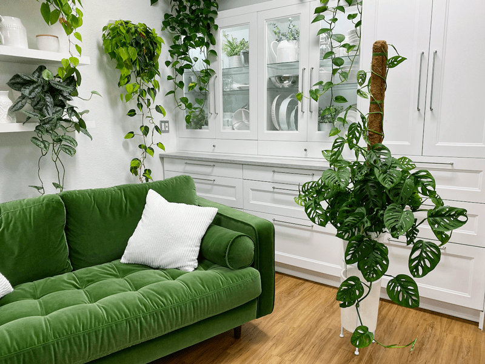
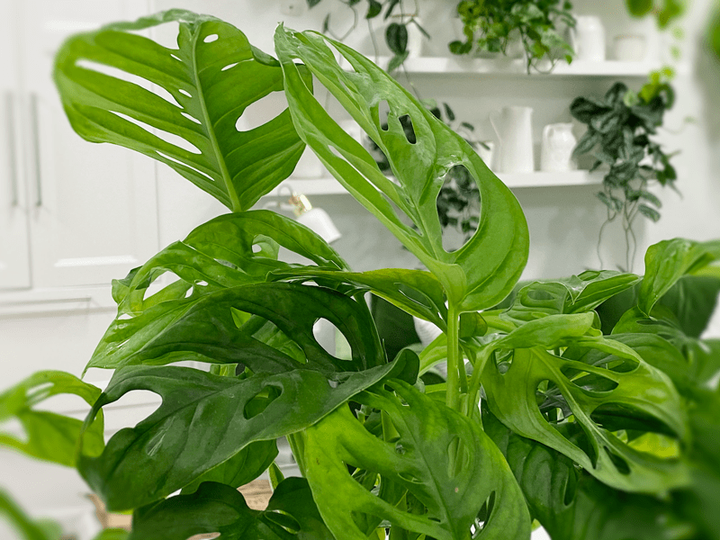
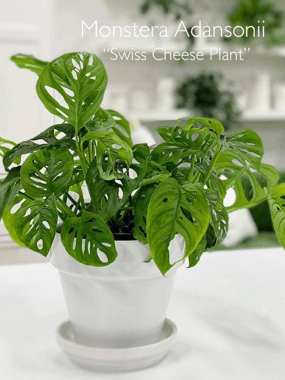
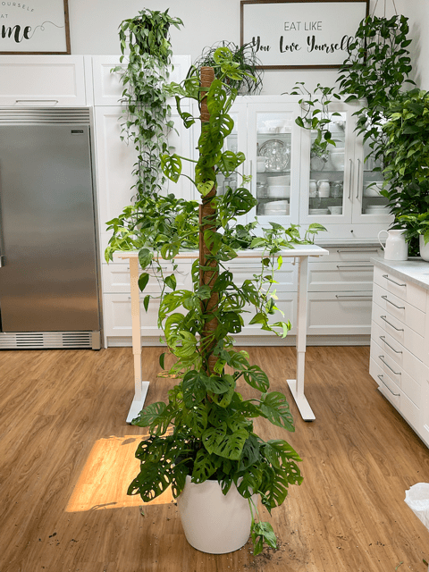

Swiss Cheese Plant | Monstera Adansonii | Care Difficulty – Easy
The Swiss cheese plant, also known as Monstera adansonii, gets its name from its large, heart-shaped leaves. As the plant ages, the leaves become covered with holes that resemble Swiss cheese. If you have scanned through the “Plant Variety” category, you will notice a common theme: Care Difficulty – Easy! I don’t have the time or energy to spend on challenging plants. The Swiss cheese plant is very easy to grow, and it loves to climb. If you give it a stake or trellis to grow upward, you’ll enjoy larger leaves with those unique holes.

This year for my birthday, my husband surprised me with a Swiss cheese plant, and trust me, that was no easy task, especially when dwelling in a very small community. He called our local florist to see if they could order one in. It just so happened that they were heading into their plant provider warehouse to pick up their order that very next day. Gina was excited to find one for me. Not only did they find one, but they also delivered it the very next day!
Once I was done drooling over the charm of this plant, I noticed that the soil was SOAKED and the plant was “tight.”
The Swiss cheese plant is part of the Monstera family. I have several Monstera deliciosa plants, and if you click on the link you will see that these plants share a similar characteristic — oval-shaped holes or fenestrations dappled throughout the leaves. But one of the differences is that the Monstera deliciosa fenestrations create openings on the edges of the leaves, whereas the Monstera adansonii (Swiss cheese) leaves do not. If you notice that the fenestrations are open along the edges on some leaves of a Swiss cheese plant, that can happen with mishandling or transport, or sometimes I have witnessed new spikes of leaf growth that push up into the hole of another leaf, and in time, it gets torn.
Characteristics of the Swiss Cheese Plant
- This plant is a vining plant, which you can train to go up on a pole, or the vines can hang naturally like a pothos plant.
- There are two forms that are differentiated called the Monstera adansonii Round Form and the Monstera adansonii Narrow Form.
- The narrow form leaves are usually more elongated, and their tips point slightly to one side.
- The round form has the same holes in the leaves as the narrow form but is wider and more heart-shaped.
- Interesting fact: Many scientists believe that the leaves are filled with holes due to the fact that they have to compete with other plants to gain sunlight. This adaptation allows the plant to cover more area while not wasting energy on a fully developed leaf blade.
- One thing to keep an eye one… new growth starts off as a “spear” and if positioned just right, they can push up in the holes of an upper leaf, possibly tearing it in time. So, it’s a good habit to check your plant to make sure this doesn’t happen.

Light Requirements
I have found that they grow best in bright, indirect light, or partial shade light. In my observation, I have noticed that if the plant isn’t getting enough life the new leaves are waiting to unfurl end up with brown edges, and don’t fully open. At first, I thought this was a watering issue but I did several tests and found that the Swiss Cheese Plants that I put in brighter lite areas, the leaves unfurled beautifully. Just something to keep tucked away. I currently have a large Swiss Cheese Plant in an east-facing window and it is flourishing.
Temperature Requirements
Like most plants, they prefer rooms kept at a temperature between 64 – 81 degrees (F). That’s a pretty wide range, so find what keeps you both comfortable. Anything below 64 degrees can cause your plant growth to slow down and possibly kill the plant if exposed for too long.
Water Requirements
Water every 1-2 weeks, allowing soil to dry out between waterings. The timing will be affected by the time of the year, your ambient temp, etc. I find that I water less in the winter. It will also depend on the placement of your plant, you can expect to water more often in brighter light and less often in lower light. When watering add enough water until the excess runs out of the bottom of the pot, so make sure the pot has plenty of drainage holes in the bottom.
Humidification Requirements
Keep the room anywhere between an average or high humidity for the happiest plant. Cold and hot temperatures can often affect humidity levels in our homes, so if you feel the change in your skin or hair, or you are walking around shocking everyone (and not with just your beauty), you might want to look into a home humidifier. I personally use the LEVOIT Humidifier which can easily handle spaces as large as 753 ft.

Plant Characteristics to Watch For
Diagnosing what is going wrong with your plant is going to take a little detective work, but even more patience! First of all, don’t panic and don’t throw out a plant prematurely. Take a few deep breaths and work down the list of possible issues. Below, I am going to share some typical symptoms that can arise. When I start to spot troubling signs on a plant, I take the plant into a room with good lighting, pull out my magnifiers, and begin by thoroughly inspecting the plant.
The leaves are turning yellow.
- Yellow leaves can be a sign that your plant lacks nutrients or it is being overwatered.
The leaves are curling and/or turning brown around the edges.
- Curled leaves and brown leaf edges can be a result of too little water and overexposure to the sun.
- Solution: First, start off by checking out the watering routine that you use for this plant. If you sense that the plant is receiving ample water, then let’s look at the location in which it lives. Bright, direct light can cast harsh rays on the plant, which will show up as signs of being sun-scorched. You will either need to relocate the plant or hang a sheer over the window to filter the light.
The leaf tips are browning with yellow halos.
- Too low humidity can cause browning leaf tips with yellow halos.
- Solution: Increase humidification by adding a room humidifier, or set the plant pot on a tray lined with pebbles and water.
Why are the leaves losing their dark-green color and becoming pale?
- The loss of color is often caused by too much light or possibly too little fertilizer.
- Solution: If you feel that you are properly fertilizing the plant, check to make sure the plant is out of the direct sun. There shouldn’t be any sunbeams coming down on it.
I wish my leaves were larger.
- Those who want to have a Monstera adansonii with larger leaves and more dynamic perforations can provide a trellis or a stake for the plant to climb.
The leaves are drooping and/or have dark brown to black spots on the lower leaves.
- Often, this is a sign that the soil is staying too damp, which can lead to root rot, which leads to bacteria and fungus. Unfortunately, this causes the plant to droop because the damaged roots can’t absorb water for the leaves and stems, so the effect is similar to the soil being too dry–leaves get no water.
- Solution: This condition is treatable if caught early.
- Remove the plant from the pot and rinse as much of the soil off the roots as you can. If they appear to be rotting, trim the roots that are smelly, soft, mushy, and/or darker in color.
- Make sure that the pot you are returning the plant to has drainage holes. If you are going to use the same pot that it was in originally, be sure to clean it with bleach and water first to kill off any bacteria or fungus that the decaying may have caused.
- Repot the plant in fresh soil that is well-draining. You can add perlite, pumice stone, or bark to the soil mix to ensure this.
- Now water the soil with a mix of 1 tablespoon of hydrogen peroxide per cup of water. Peroxide releases oxygen and acts as an oxygen supplement for plants. It seems to really support both good health and strong growth for plants. Hydrogen peroxide can also help with soil fungus.
- **Keep in mind that they need less water when the weather gets cooler, so you might not need to give it the same amount of water in the winter as you do in the heat of summer.
The leaves on my plant are folded or shriveled.
- Leaves that are folded or shriveled is an indicator that the soil is too dry.
- Solution: Water the plant slowly until water starts to drip out of the drainage pot. See “watering requirements” up above.
 The new leaves are not unfurling (opening up).
The new leaves are not unfurling (opening up).
- The most common reason for delayed leaf unfurling is lack of humidity, but it can also be a lack of patience on your end. I say that from experience.
- Solution: Supplement with a room humidifier. If there’s still no change, double-check the lighting and the temperatures that the plant is being exposed to. Remember, diagnosing plant symptoms takes time, so don’t expect dramatic changes with a couple of days.
The leaves don’t have holes in them.
- Newer leaves will have fewer holes than those that are more developed. Young plants often have no holes in the leaves. The leaves will emerge as the plant matures. When new leaves emerge, they will be a fresh and bright green and will darken to when mature.
I would love a fuller-looking plant.
- To create a fuller-looking plant, pruning is the ticket. Take some cuttings from your longest stems. You’ll want to cut either side of where the leaf joins the stem (in the same way that you would propagate a pothos plant) using a sterile scissor. Not only will this force new bushier growth, but it will give you some leaves to propagate, giving you more plant babies.
- If patience isn’t one of your superpowers, you can take rooted cuttings and plant them in the same pot as the mother plant.
When I water my plant, the water rushes right through and out the drain holes.
- This can be a sign that the plant is root-bound, which prevents the water from soaking all of the soil/roots. Without the ability to get the water and nutrients it needs, this plant won’t grow to its full potential.
- Solution: Gently remove the plant from the pot and check out the root system. If the roots are circling the plant, chances are that it is root-bound.
Additional Care
- Remove yellow or dying leaves, and plant debris, to encourage better growing conditions and to reduce pests who are attracted to decaying matter. While pruning, always use clean scissors to reduce the chance of bacterial and fungal diseases.
- Clean the leaves often enough to keep dust off. This is especially important if the plant is in a lower-light location. Due to the holes in the leaves, it is best to clean the leaves with a shower of water. You can do this in the kitchen sink with a hand sprayer, or if it’s too big for that, do it in the tub or outside with a hose (weather permitting).
- Avoid using commercial leaf-shining products on this plant.
-

-
Mealybugs
-

-
Scales
-

-
Spider mites
Common Bugs to Watch For
If you want to have healthy houseplants, you MUST inspect them regularly. Every time I water a plant, I give it a quick look-over. Bugs/insects feeding on your plants reduces the plant sap and redirects nutrients from leaves. Some chew on the leaves, leaving holes in the leaves. Also watch for wilting or yellowing, distorted, or speckled leaves. Pests can quickly get out of hand and spread to your other plants.
IF you see ONE bug, trust me, there are more. So, take action right away. Some are brave enough to show their “faces” by hanging out on stems in plan sight. Others tend to hide out in the darnedest of places, like the crotch of a plant or in a leaf that has yet to unfurl.
- Mealybugs look like small balls of cotton. They can travel, slowly, but they have a strong will and determination! Though they are slow-moving, if any plant is touching another, there is a chance the mealybug will hitch a ride on a new leaf and spread. They breed like rabbits of the insect world. Females can deposit around 600 eggs in loose cottony masses, often on the underside of leaves or along stems.
- Scales are dark-colored bumps that are primarily immobile insects that stick themselves to stems and leaves. They are rather inconspicuous and don’t look like a typical insect. They can range in color but are most often brownish in appearance. They’re called “scales” primarily due to their scale-like appearance on a plant, due to waxy or armored coverings. They are often seen in clumps along a stem, sucking away at the plant’s juices with their spiky mouthpart.
- Spider mites are more common on houseplants. They are not insects – they are related to spiders. These appear to be tiny black or red moving dots. Spider mites are nearly invisible to the naked eye. You often need a magnifying lens to spot them, or you may just notice a reddish film across the bottom of the leaves, some webbing, or even some leaf damage, which usually results in reddish-brown spots on the leaf.
Toxicity
According to the ASPCA, the Monstera adansonii is considered to be moderately toxic when it comes to your pets. If eaten, they can have a number of adverse reactions such as vomiting, swallowing problems, or oral irritation. If your pet tends to chew on leaves around the house, keep your Monstera out of their way.

6/30/21 – Here is an update photo of the plant shown up top which was from 10/03/20. I up-potted it and added a total of 70″ of moss pole to it. Shew!
© AmieSue.com